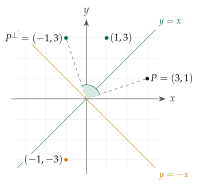
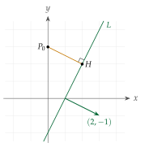

En 1637 René Descartes publicó La Géométrie, donde propuso describir cada punto del plano por un par de números y cada curva por una ecuación. La idea, que también tuvo Pierre de Fermat por la misma época, convirtió los problemas geométricos en problemas algebraicos, y viceversa. La geometría que hemos construido nos permite justificar ese diccionario: cada fórmula de este capítulo es la traducción de un teorema de los capítulos anteriores.
Una convención de notación que usaremos en todo el capítulo: si A=(a1,a2) y B=(b1,b2), escribimos B−A=(b1−a1, b2−a2),A+B=(a1+b1, a2+b2),tA=(ta1, ta2). Son operaciones con pares de números, y por ahora no les damos otro significado; en el capítulo 11 veremos que son operaciones con vectores.
Una recta orientada (o eje) es una recta en la que se ha fijado una regla (Postulado 2.2.2): un punto O, el origen, con coordenada 0; un punto U con coordenada 1, que fija la unidad de medida o patrón; y con ello un sentido positivo, el de O hacia U. La coordenada xP de un punto P se llama su abscisa.
Si A y B están en una recta orientada con abscisas a y b, la medida algebraica (o longitud dirigida) del segmento AB, recorrido de A hacia B, es AB=b−a. Su valor absoluto es la distancia AB=∣b−a∣, y su signo indica el sentido: positivo si va en el sentido de la recta y negativo si va en el contrario.
Para tres puntos cualesquiera A, B, C de una recta orientada, AB+BC=AC. El punto medio de AB tiene abscisa 2a+b.
AB+BC=(b−a)+(c−b)=c−a=AC, sin importar el orden de los puntos: los signos se encargan de los casos. El punto medio se encontró en el Teorema 2.2.6.
Un sistema de coordenadas cartesianas en un plano está formado por dos rectas orientadas perpendiculares, el eje x y el eje y, que se cortan en su origen común O, con la misma unidad, y tales que el semieje positivo y se obtiene girando el semieje positivo x un ángulo recto en sentido antihorario.
Fijado un sistema de coordenadas, existe una correspondencia biunívoca entre los puntos del plano y los pares ordenados (x,y)∈R2.
De punto a par. Por P trazamos las perpendiculares a los ejes, que son únicas (Teorema 3.3.3). Sus pies tienen abscisa x en el eje x y coordenada y en el eje y, únicas por el postulado de la regla. A P le asociamos (x,y).
De par a punto. Dado (x,y), sean X y Y los puntos de coordenadas x y y en los ejes. La perpendicular al eje x por X es paralela al eje y, y la perpendicular al eje y por Y es paralela al eje x; como los ejes se cortan, estas dos rectas también se cortan, en un único punto P.
Las dos construcciones son inversas una de otra.
Escribimos P=(x,y); x es la abscisa y y la ordenada de P. Los ejes dividen al plano en cuatro cuadrantes: I (+,+), II (−,+), III (−,−), IV (+,−).

La diagonal es la bisectriz de los cuadrantes I y III, formada por los puntos (x,x); la contradiagonal es la bisectriz de los cuadrantes II y IV, formada por los puntos (x,−x).
Sea P=(a,b).
El simétrico de P respecto a la diagonal es (b,a), y respecto a la contradiagonal es (−b,−a).
Al girar P un ángulo recto en sentido antihorario alrededor de O se obtiene P⊥=(−b,a).
(ii) Supongamos a,b>0 (los demás casos son análogos).
Sea Q=(a,0); el triángulo △OQP es rectángulo en Q, con OQ=a y QP=b.

El giro lleva el semieje positivo x sobre el semieje positivo y, así que Q va a Q′=(0,a).
El triángulo △OQ′P⊥ es congruente con △OQP (un giro conserva distancias y ángulos), rectángulo en Q′, con Q′P⊥=b en la dirección perpendicular al eje y que queda “a la izquierda”.
Luego P⊥=(−b,a).
(i) Se razona igual: la reflexión en la diagonal intercambia los semiejes positivos, porque la diagonal es la bisectriz del ángulo recto entre ellos, y por tanto intercambia las coordenadas.
Esta observación sencilla será clave: si un segmento va de O a (u1,u2), el segmento de O a (−u2,u1) es perpendicular a él y tiene la misma longitud.
Sean A=(a1,a2) y B=(b1,b2) distintos. Para cada t∈[0,1], el punto P(t)=A+t(B−A)=(a1+t(b1−a1), a2+t(b2−a2)) es el punto de AB tal que AP=t⋅AB. Cuando t recorre [0,1], P(t) recorre el segmento de A (t=0) a B (t=1).
Sea P=(x,y) el punto de AB con AP=tAB.
Si a1=b1, las perpendiculares al eje x por A, P y B son paralelas, y por el teorema de Thales (general) cortan a AB y al eje x en segmentos proporcionales: b1−a1x−a1=ABAP=t⟹x=a1+t(b1−a1). Si a1=b1, el segmento es vertical y x=a1, lo que también coincide con la fórmula.
Lo mismo con la segunda coordenada usando perpendiculares al eje y.
El punto medio de AB es M=2A+B=(2a1+b1,2a2+b2).
El punto que divide a AB en la razón AP:PB=m:n es P=A+m+nm(B−A)=m+nnA+mB.
Q(t)=B+t(A−B) recorre el mismo segmento en sentido contrario, y Q(t)=P(1−t).
Sean A=(1,2) y B=(7,5). Entonces B−A=(6,3) y P(t)=(1+6t, 2+3t). El punto medio es P(21)=(4, 3,5) y los puntos de trisección son P(31)=(3,3) y P(32)=(5,4).
Trasladar el segmento AB al punto C es construir el segmento CD con D=C+(B−A).
Si C∈/AB y D=C+(B−A), entonces ABDC es un paralelogramo; en particular, CD∥AB y CD=AB. Trasladado al origen, el segmento AB se convierte en el segmento de O a B−A.
Los puntos medios de las diagonales AD y BC son 2A+D=2A+C+B−A=2B+C: coinciden. Las diagonales se bisecan, y por el Teorema 4.2.3 el cuadrilátero es un paralelogramo.

Sean U=B−A=(u1,u2) y V=D−C=(v1,v2), con A=B y C=D. Son equivalentes:
AB y CD son paralelos (o están en una misma recta);
existe λ=0 tal que V=λU;
u1v2−u2v1=0.
Si λ>0 los segmentos tienen el mismo sentido, y si λ<0 sentido contrario.
(i)⇔(ii) Trasladamos ambos segmentos al origen: quedan OU y OV, que son paralelos si y solo si O, U, V están en una misma recta, es decir, si V está en la recta OU. Por el Teorema 9.3.1 (con t∈R en lugar de t∈[0,1], como precisaremos en el Teorema 9.4.2), eso significa V=O+λ(U−O)=λU.
(ii)⇒(iii) u1(λu2)−u2(λu1)=0.
(iii)⇒(ii) Si u1=0, sea λ=u1v1; entonces v2=u1u2v1=λu2. Si u1=0, entonces u2=0 y se razona con λ=u2v2.
Los puntos A, B, C son colineales si y solo si (b1−a1)(c2−a2)−(b2−a2)(c1−a1)=0.
La distancia entre A=(a1,a2) y B=(b1,b2) es d(A,B)=(b1−a1)2+(b2−a2)2.
Si a1=b1 y a2=b2, sea C=(b1,a2). El segmento AC es horizontal y CB vertical, así que △ACB es rectángulo en C, con catetos AC=∣b1−a1∣ y CB=∣b2−a2∣. Por el teorema de Pitágoras se obtiene la fórmula. Si a1=b1 o a2=b2, el segmento es vertical u horizontal y la fórmula se reduce a ∣b2−a2∣ o ∣b1−a1∣.
La recta que pasa por los puntos distintos A y B está formada por los puntos P(t)=A+t(B−A),t∈R;es decir,{x=a1+tu1y=a2+tu2t∈R, donde U=(u1,u2)=B−A se llama un director de la recta.
P∈AB si y solo si P=A o los segmentos AP y AB están en una misma recta, y por el criterio de paralelismo esto ocurre si y solo si P−A=t(B−A) para algún t∈R.
Los valores 0≤t≤1 dan el segmento AB; t>1, los puntos más allá de B; t<0, los puntos antes de A. Cualquier múltiplo no nulo de un director es también un director.
La recta por A=(1,1) y B=(4,3) es x=1+3t, y=1+2t. ¿Está en ella el punto (10,7)? De 1+3t=10 sale t=3, y entonces y=1+2⋅3=7: sí. ¿Y el punto (7,6)? De 1+3t=7 sale t=2, pero 1+2⋅2=5=6: no.
Sean L1: A+tU y L2: C+sV. Si u1v2−u2v1=0, las rectas se cortan en un único punto, que se halla resolviendo el sistema A+tU=C+sV. Si u1v2−u2v1=0, son paralelas o coinciden.
L1: (1,1)+t(2,1) y L2: (0,5)+s(1,−1). Igualando, 1+2t=s y 1+t=5−s. Sustituyendo, 1+t=4−2t, t=1 y s=3. El punto de corte es (3,2); comprobación en L2: (0+3,5−3)=(3,2).
Sea L: A+tU y P un punto. Con U⊥=(−u2,u1):
la paralela a L por P es P+tU;
la perpendicular a L por P es P+sU⊥.
(i) Tiene el mismo director, así que es paralela (o igual) a L, y por Playfair es la única. (ii) Trasladado al origen, el segmento director de L es OU, y por el Teorema 9.2.4 el segmento OU⊥ es perpendicular a él. La recta por P con director U⊥ es entonces perpendicular a L (Corolario 3.4.6), y es única por el Teorema 3.3.3.
La mediatriz de AB es la recta M+s(B−A)⊥, con M=2A+B.
Para A=(1,2) y B=(5,4): M=(3,3), B−A=(4,2) y (B−A)⊥=(−2,4). La mediatriz es x=3−2s, y=3+4s. Comprobación: con s=1 se obtiene Q=(1,7), y d(Q,A)=0+25=5, d(Q,B)=16+9=5.
Con U=B−A y V=D−C no nulos, AB⊥CD si y solo si u1v1+u2v2=0.
Trasladamos al origen: OU⊥OV si y solo si el triángulo △OUV es rectángulo en O, y por Pitágoras y su recíproco esto equivale a d(U,V)2=d(O,U)2+d(O,V)2, es decir, (u1−v1)2+(u2−v2)2=u12+u22+v12+v22⟺−2u1v1−2u2v2=0.
El ángulo θ entre los segmentos de O a U y de O a V cumple cosθ=u12+u22v12+v22u1v1+u2v2.
En el triángulo △OUV, el lema de la proyección (Lema 6.6.1), escrito en forma trigonométrica, es la ley del coseno: d(U,V)2=∣OU∣2+∣OV∣2−2∣OU∣∣OV∣cosθ. Desarrollando d(U,V)2 como en la prueba anterior, d(U,V)2=∣OU∣2+∣OV∣2−2(u1v1+u2v2). Comparando, ∣OU∣∣OV∣cosθ=u1v1+u2v2.
Para U=(3,1) y V=(1,2): cosθ=1053+2=505=21, así que θ=45∘.
Sea L la recta x=x0+tu1, y=y0+tu2. Si u1=0, la recta es vertical: x=x0. Si u2=0, es horizontal: y=y0.
Si L no es vertical, el número m=u1u2=b1−a1b2−a2 no depende de los puntos A,B∈L elegidos; se llama pendiente de L. La recta tiene ecuación y−y0=m(x−x0)(punto-pendiente),y=mx+b(pendiente-intercepto).
Otro director es λU, y λu1λu2=u1u2. Eliminando t de las ecuaciones paramétricas, t=u1x−x0 y y=y0+u1u2(x−x0).
Arrastre P y Q. Observe cómo cambian la pendiente y las ecuaciones de la recta.
Si u1=0 y u2=0, al despejar t de las dos ecuaciones paramétricas se obtiene la ecuación simétrica u1x−x0=u2y−y0. Si la recta corta a los ejes en (a,0) y (0,b), con a,b=0, se escribe en la forma segmentaria ax+by=1.
Toda recta del plano tiene una ecuación de la forma ax+by+c=0,(a,b)=(0,0), y recíprocamente, toda ecuación de esta forma representa una recta. El par N=(a,b) es perpendicular a la recta (es un normal), y (−b,a) es un director.
Si L pasa por P0=(x0,y0) con director U, entonces P∈L si y solo si P0P es paralelo a U (o P=P0), es decir, perpendicular a U⊥=(−u2,u1); por el criterio de perpendicularidad, −u2(x−x0)+u1(y−y0)=0, que tiene la forma ax+by+c=0 con a=−u2, b=u1.
Recíprocamente, si b=0, la ecuación ax+by+c=0 equivale a y=−bax−bc, que es una recta; si b=0, a=0 y la ecuación es x=−ac, una recta vertical.
Por la primera parte, (a,b) es perpendicular al director.
Arrastre A y B sobre la cuadrícula.
Sean L1: a1x+b1y+c1=0 y L2: a2x+b2y+c2=0.
L1∥L2 si y solo si a1b2−a2b1=0; con pendientes, si y solo si m1=m2 (o ambas son verticales).
L1⊥L2 si y solo si a1a2+b1b2=0; con pendientes, si y solo si m1m2=−1 (o una es vertical y la otra horizontal).
La distancia del punto P0=(x0,y0) a la recta L: ax+by+c=0 es d(P0,L)=a2+b2∣ax0+by0+c∣.
La perpendicular a L por P0 es P0+t(a,b).
Su punto H=(x0+ta, y0+tb) está en L cuando a(x0+ta)+b(y0+tb)+c=0, es decir, t=−a2+b2ax0+by0+c.
Entonces d(P0,L)=P0H=∣t∣a2+b2=a2+b2∣ax0+by0+c∣.
Arrastre P y los puntos que definen la recta.
La distancia entre las rectas paralelas ax+by+c1=0 y ax+by+c2=0 es a2+b2∣c1−c2∣.
El área del triángulo de vértices A, B, C es A=21(b1−a1)(c2−a2)−(b2−a2)(c1−a1).
Tomamos como base AB, de longitud u12+u22 con U=B−A. La recta AB tiene ecuación −u2(x−a1)+u1(y−a2)=0, y la altura es la distancia de C a ella: h=u12+u22∣−u2(c1−a1)+u1(c2−a2)∣. Entonces A=21u12+u22h, que es la fórmula.
Para A=(0,0), B=(4,1) y C=(1,3): A=21∣4⋅3−1⋅1∣=211. Como comprobación, la recta AB es x−4y=0, la distancia de C a ella es 17∣1−12∣=1711, y AB=17.

Próxima semana: El espacio con coordenadas y los vectores